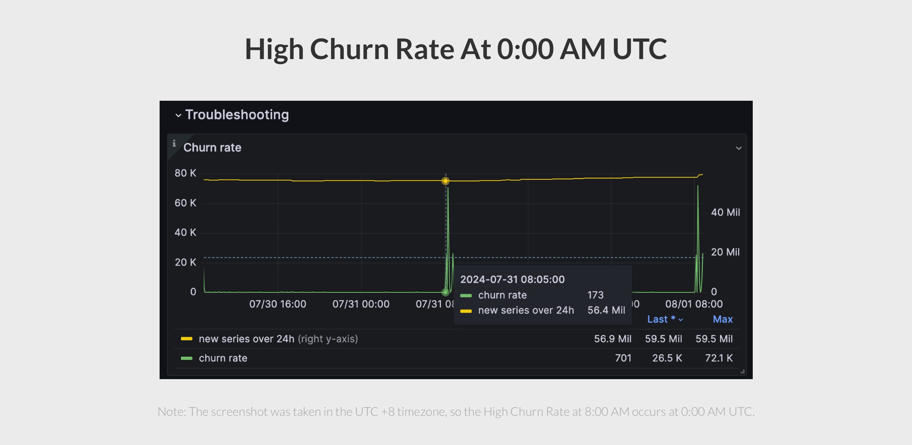
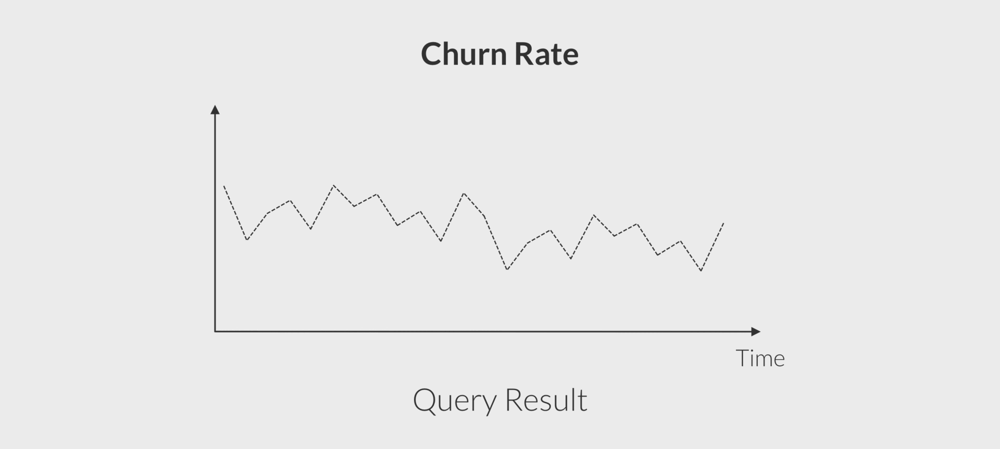
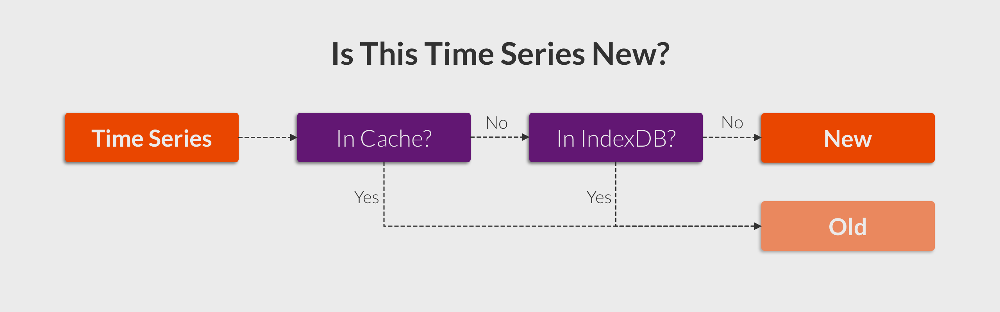
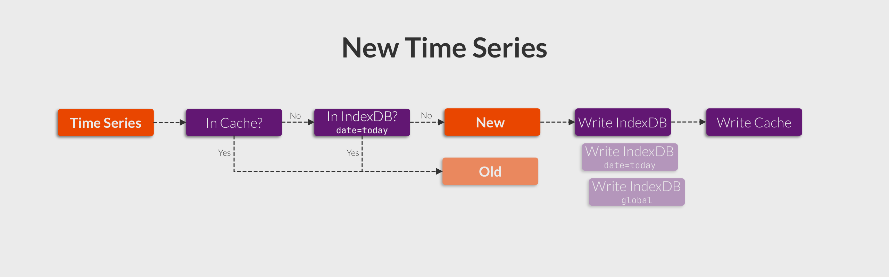
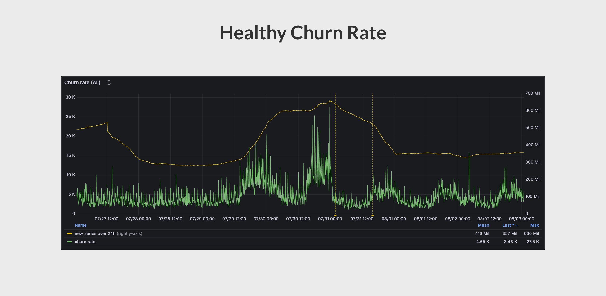
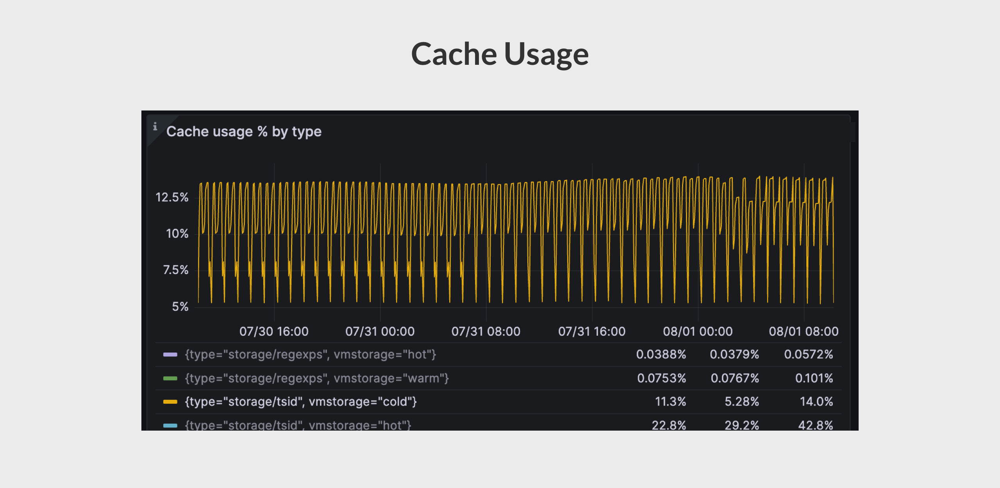
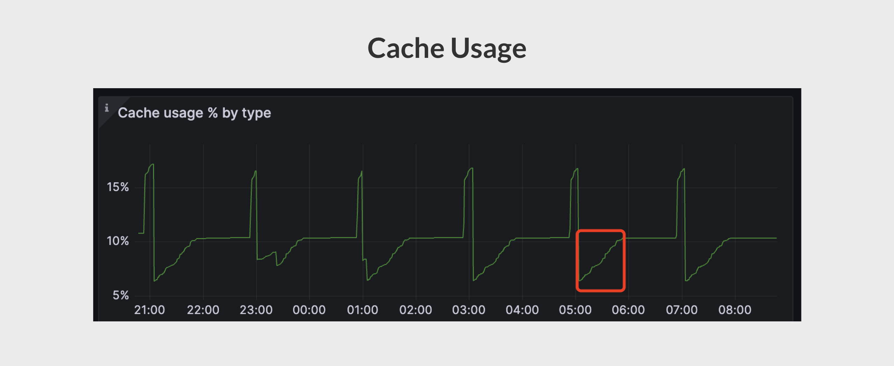

社区报障案例：没有新的 Time Series，为什么 Churn Rate 升高？
上周，我在 Slack 看到一位用户求助：
我的 VictoriaMetrics 集群在每天 0 点都有很高的 Churn Rate。但是当我开启
-logNewSeries，我发现这些“新” Time Series 其实都已经存在过，这是为什么呢？

What Is Churn Rate
Churn Rate，也就是新 Time Series 出现的速率。
如果旧的 Time Series 一直在被新 Time Series 所替代，我们称之为 High Churn Rate。High Churn Rate 对 TSDB 有以下的不良影响：
- 使得 TSDB 中总的 Time Series 数量增加；
- 使得 TSDB 中的倒排索引（Inverted Index）体积增加；
- 使得范围查询的性能下降，因为需要聚合更多的 Time Series。
在 VictoriaMetrics 中，你可以用这个语句来查询它：
sum(rate(vm_new_timeseries_created_total))

那么回到用户的问题，如果真的没有新的 Time Series 出现，Churn Rate 难道不应该是 0 吗？
理论上，是的。为了解答这个问题，我们需要先了解 Churn Rate 是如何计算的。
How Churn Rate is Calculated in VictoriaMetrics
如果我们需要知道哪些 Time Series 已经出现过，我们必须要先将它（及相关索引）记录到磁盘中。当有 Time Series 到来，我们从磁盘（的倒排索引）中查询是否有相同的 Time Series 存在。
在此基础上，最常见的查询优化是使用内存缓存。所以我们可以得到如下的流程图：

Root Cause
根据这些知识，我们继续思考用户的问题，如果一个 Time Series 被判定为“新”，说明它既不存在于 Cache 中，也不存在于倒排索引中。
我们仔细观察倒排索引的查询，看看能不能有新的收获：
// Search for TSID for the given mr.MetricNameRaw in the indexdb.
if is.getTSIDByMetricName(&genTSID, metricNameBuf, date) {
// Slower path - the TSID has been found in indexdb.
...
}
// Slowest path - the TSID for the given mr.MetricNameRaw isn't found in indexdb. Create it.
...
其中，date 参数非常容易引起注意，这说明数据是按天查找的，如果真的是这样，那相当于每日凌晨所有的 Time Series 都是“新” Time Series，和用户描述的现象就能对得上了。
所以，更准确的数据写入流程图应该是：

为了验证这个情况，我又查看了我们内部的 VictoriaMetrics 集群面板，奇怪的是，Churn Rate 还是相对平稳的，并没有在每日凌晨暴涨。

“Aha，因为还有 Cache”，我突然想起来。现在已经离 Root Cause 很接近了，那为什么用户的 Time Series 不在 Cache 中呢？
我再次查看用户提供的信息，发现了以下内容：
我的（有问题的）VictoriaMetrics Cluster 主要用于存放 Downsampling 的数据，它们是每隔 1 小时生成一次的。
这是个很重要的信息，如果缓存有 TTL，1 小时可能会超过 TTL 的时间。通过简单的搜索，我发现 TTL 是由 cacheExpireDuration 参数控制的，默认值为 30 分钟。
那么问题原因到这里就已经明确了：
- 用户每次 Downsampling 生成数据被记录到缓存和倒排索引中，其中缓存 TTL 30 分钟；
- 30 分钟后，缓存过期；1 小时后，用户再次生成新的 Downsampling 数据，无法命中缓存，转而命中倒排索引；
- 因为查询使用的倒排索引是当日的数据，所以每日凌晨时无法命中，数据被视为新的 Time Series，表现为 High Churn Rate。
为了最终确认，我让用户查看缓存使用率的情况，是否每次生成数据时上升，过了 30 分钟后降低。果然：

How To Fix It
非常简单，根据实际数据生成的间隔，将 cacheExpireDuration 修改至合适的时长。
Conclusion
在这篇博客中，我们通过 Churn Rate 问题的排查，介绍了 Churn Rate 的概念，以及它在 VictoriaMetrics 中的统计规则。
实际上，每个 Time Series 在 VictoriaMetrics 中的处理更加复杂，例如在每次 IndexDB 滚动之前 1 小时需要进行预热（Prefill），详细实现请阅读：add。
Bonus Section
在用户将 cacheExpireDuration 调整至 90 分钟后，理论上能够覆盖 Downsampling 数据的生成间隔，所以 Cache 使用率似乎应该保持稳定。但是实际上，Cache 使用率如下图所示，你知道为什么吗？
